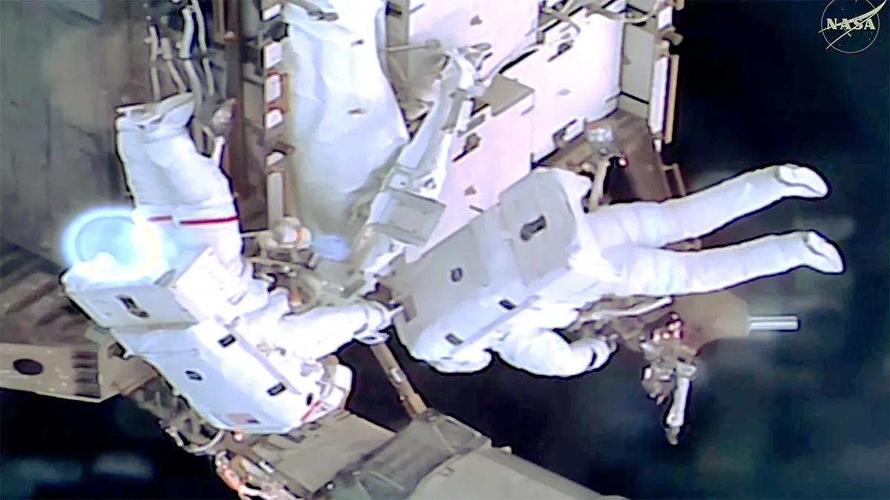
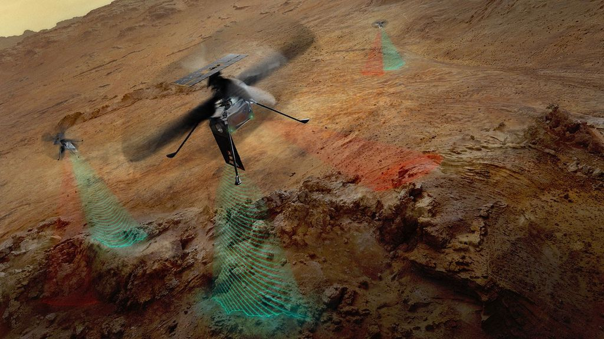
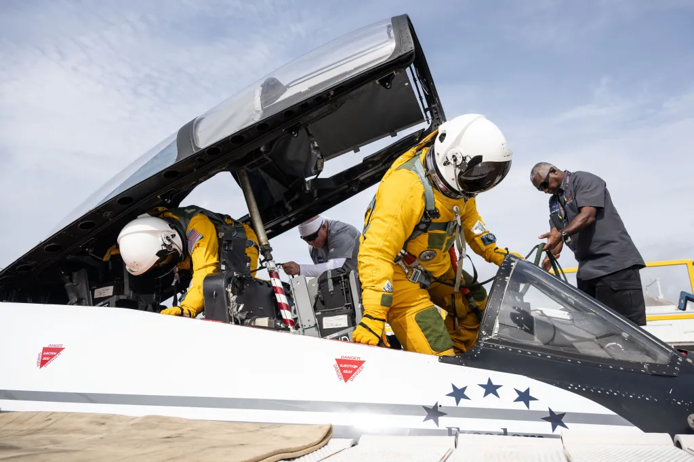
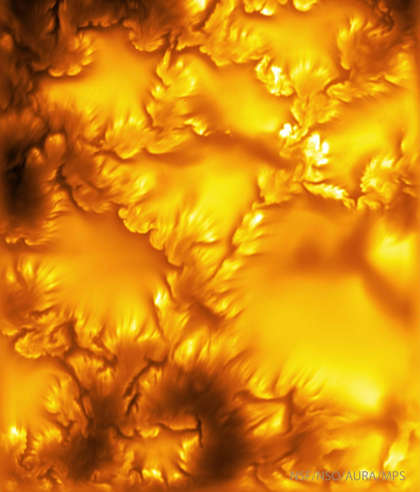

NOVIDADES
Astronautas concluem caminhada espacial para modificações nos painéis solares.
Os astronautas da NASA Jessica Meir e Anil Menon concluíram sua caminhada espacial fora da Estação Espacial Internacional às 15h (horário do leste dos EUA). Foi a primeira caminhada espacial de Menon e a sexta de Meir. Durante a caminhada espacial de 6 horas e 27 minutos, Meir e Menon concluíram seus objetivos principais, que incluíam a preparação do canal de energia 3B. Esse trabalho possibilitará a futura instalação de painéis solares extensíveis, chamados IROSA, para fornecer energia adicional ao laboratório orbital, dando suporte a sistemas críticos e à desorbitação segura e controlada da estação espacial. Esta foi a 281ª caminhada espacial em apoio à montagem, manutenção e atualizações da estação espacial.

Helicópteros SkyFall da NASA em ação (Conceito artístico)
Esta ilustração artística retrata os três helicópteros SkyFall da NASA coletando dados enquanto sobrevoam a superfície do Planeta Vermelho. As ondas de frequência verde emanadas das grandes antenas dos helicópteros representam a coleta de dados de radar do subsolo. Os feixes vermelhos representam a coleta de dados de imagens no infravermelho próximo do regolito (rocha triturada e poeira) e outras características da superfície. Equipados com quatro instrumentos cada, os três helicópteros seguirão os passos do Ingenuity Mars Helicopter da NASA, um demonstrador tecnológico que realizou 72 voos ao longo de quase três anos , comprovando que o voo motorizado e controlado é possível na atmosfera rarefeita de Marte. O Ingenuity também demonstrou como uma perspectiva aérea pode gerar dados valiosos, auxiliando a equipe do rover Perseverance da NASA a planejar rotas mais rápidas e a escolher locais para coleta de dados científicos.A missão SkyFall tem previsão de lançamento a bordo do reator espacial Freedom da NASA no final de 2028. O projeto SkyFall, que levará três helicópteros a Marte em dezembro de 2028, é gerenciado pelo Laboratório de Propulsão a Jato (JPL) da NASA. A AeroVironment, de Arlington, Virgínia — que trabalhou com o JPL no projeto e construção do histórico helicóptero Ingenuity — será responsável pelo projeto e fabricação dos helicópteros SkyFall. Gerenciado pelo Caltech para a NASA, o JPL administra o Programa de Exploração de Marte em nome da Diretoria de Missões Científicas da NASA, em Washington.

Alçando voo para se preparar para o espaço
O astronauta da NASA Adam Fuhrmann (à direita, de amarelo) se prepara para um voo de treinamento a bordo da aeronave WB-57 da NASA nesta foto de 16 de julho de 2026. Esses voos em grandes altitudes treinam a tripulação para trabalhar em um ambiente confinado e operar os sistemas da aeronave enquanto vestem um traje pressurizado, preparando-os para futuras missões à Estação Espacial Internacional, à Lua ou além.

Lucy, da NASA, inicia testes de câmera antes dos sobrevoos de Troia em 2027.
Preparando-se para os primeiros encontros da sonda Lucy da NASA com asteroides troianos, os cientistas da missão começaram a instruir a espaçonave a apontar suas câmeras para seus futuros alvos. A centenas de milhões de quilômetros de distância, os asteroides aparecem como minúsculos pontos de luz. No entanto, essas observações iniciais ajudarão a equipe a selecionar as melhores configurações de câmera para os próximos sobrevoos de Lucy, a partir de 2027.Nesta primavera, Lucy observou Eurybates, Polymele, Leucus e Orus com sua câmera de alta resolução L'LORRI, e a equipe concluiu a transmissão e o processamento das imagens em julho. A espaçonave sobrevoará esses quatro asteroides, dois dos quais possuem pequenas luas, entre agosto de 2027 e novembro de 2028. Viajando a velocidades de até 25.750 km/h, a espaçonave tirará fotos em comprimentos de onda visíveis e infravermelhos e coletará outros dados à medida que passar por cada objeto. Lucy é a primeira missão selecionada para estudar os asteroides troianos, que orbitam o Sol em dois enxames ao longo da órbita de Júpiter, embora esses asteroides não estejam nem perto do planeta gigante.

Nova imagem mais nítida do Sol revela instabilidade.
O que a nova imagem mais nítida do nosso Sol mostra? Instabilidade. Mais especificamente, um certo tipo de processo interativo chamado Instabilidade de Kelvin-Helmholtz (IKH). Essa instabilidade pode criar ondas e redemoinhos quando dois fluxos de plasma solar se cruzam — neste caso, fluxos variáveis de plasma magnético solar . Há muito tempo hipotetizada a ocorrer na superfície do Sol , a ocorrência de estrias e redemoinhos da IKH foi confirmada em imagens impressionantes de alta resolução, recentemente divulgadas e capturadas pelo Telescópio Solar Inouye , no Havaí , EUA . A imagem em amarelo falso , na verdade capturada em azul profundo, é a imagem de maior resolução já obtida do Sol em luz visível . Ela abrange aproximadamente o raio da Terra , mas seus detalhes mais finos são do tamanho de uma cidade. São visíveis vários topos lisos de grânulos solares em transformação , enquanto as bordas das estruturas em forma de flor apresentam múltiplos redemoinhos da IKH . Pesquisas futuras poderão investigar como a IKH ajuda a movimentar energia e campos magnéticos, e pode até mesmo aquecer a coroa solar circundante .
